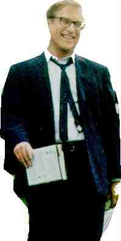

Mr. Holland’s Opus A-, A-
US/1995/Color/Widescreen 2.35:1/Stereo Surround, AC-3/143 minutes/Directed by Stephen
Herek/Starring Richard Dreyfuss, Glenne Headly/Hollywood/24 Chaps/CLV/2 discs/$
The episodic structure of movies covering ambitious time spans is a high hurdle to leap
for success. Mr. Holland’s Opus is a high jump champ. It effortlessly chronicles the
forty years of Glen Holland's life as he reluctantly grows into the job of a high school
music teacher.
Though much of the praise for this film has focused on the fine Dreyfuss performance,
director Stephen Herek's sense of pacing is dynamite. The almost two and a half hour film
never drags. Each segment of Holland's life moves on before the sharpness of the time
dulls which leads to the blatantly sentimental ending which could have been lifted right
out of Frank Capra's It's a Wonderful. Wait a second, did I say that. It's okay, because
even if it is a reworking, updating, fresh look, what have you, of those themes, Mr.
Holland’s Opus is a beautiful and fulfilling film experience.
Richard Dreyfuss plays

Holland beautifully. Dreyfuss restrains his often
overzealous screen energy to craft a flesh and blood human being of writer Sean Patrick
Duncan's's title character. The actor reaches deep into himself for this role. Holland
seduces his students bring music to them through any channel of understanding available.
Dreyfuss also seduces his audience. We care about Holland, just as Holland cares for his
students. It's a rich, rewarding performance.
Director Herek works very well with all his actors in support of Dreyfuss great work.
Glenne Headley is an understanding wife and Jay Thomas lends a warmth to the role of
athletic coach Bill Meister. Jean Louisa Kelly is a beautiful screen presence as Rowena,
who represents Holland's unfulfilled dreams.
Herek conducts the various elements of Mr. Holland’s Opus with a veteran screen
man's knowing touch though he still has some water behind his ears. The cinematography by
Oliver Wood is lively and upbeat. Michael Kamen's score is appropriately sentimental and
successfully uses elements from the film's structure. David Nichols makes Holland's thirty
years perfectly in synch with the times through excellent production design.
This is a stunning laser disc. It been transferred cleanly from perfect elements with
bright levels and dynamic contrasts. Colors are intense, fully saturated, blacks strong.
The night scenes are lovely to look at without grain. Perhaps the sharpness has been
tweaked too much, but in most instances in works beneficially. Watch out for the school's
staircase though. Music is a major part of Mr. Holland’s Opus and has been recorded
on this laser disc with a beautiful full dynamic range. The lush orchestration and
composition of Michael Kamen is served professionally.